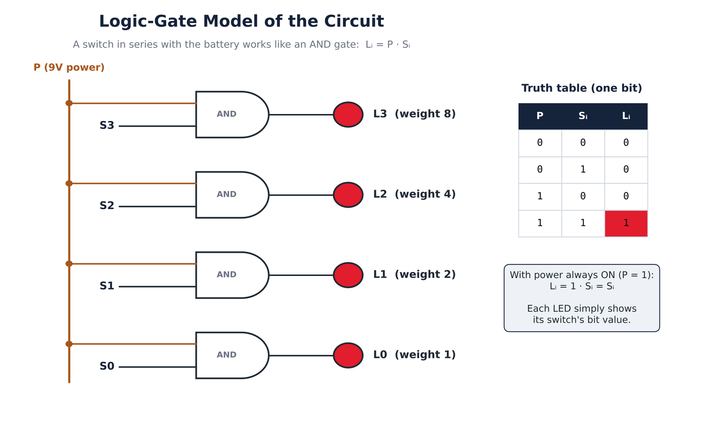
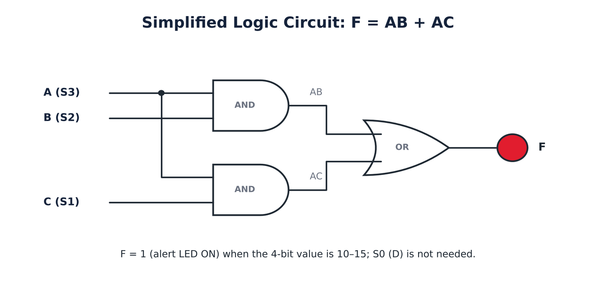
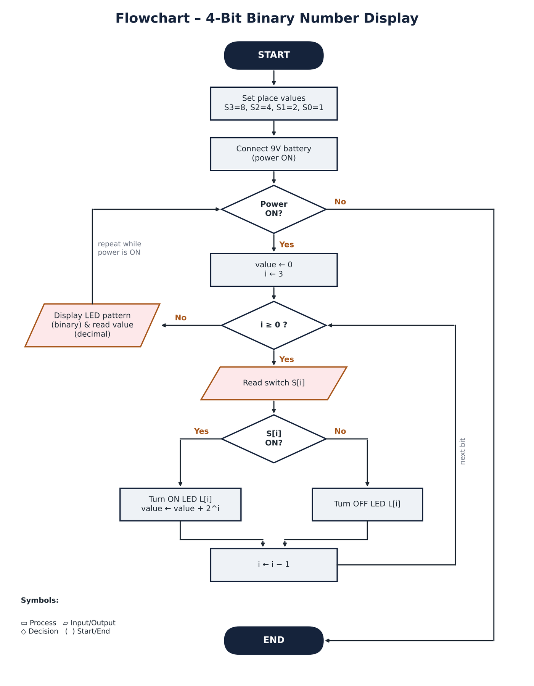
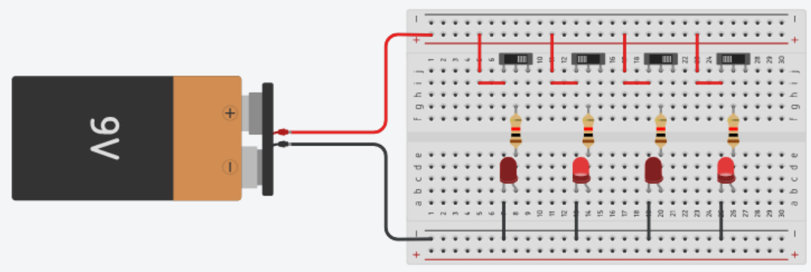
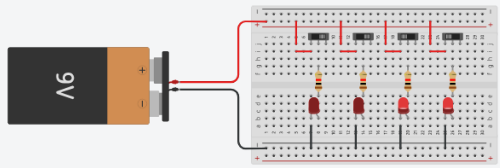
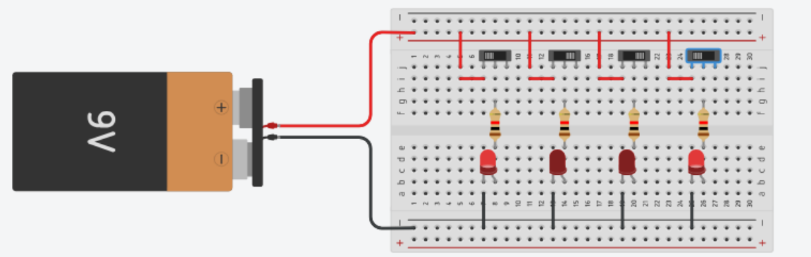
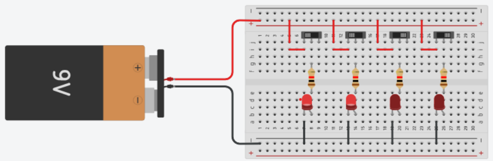
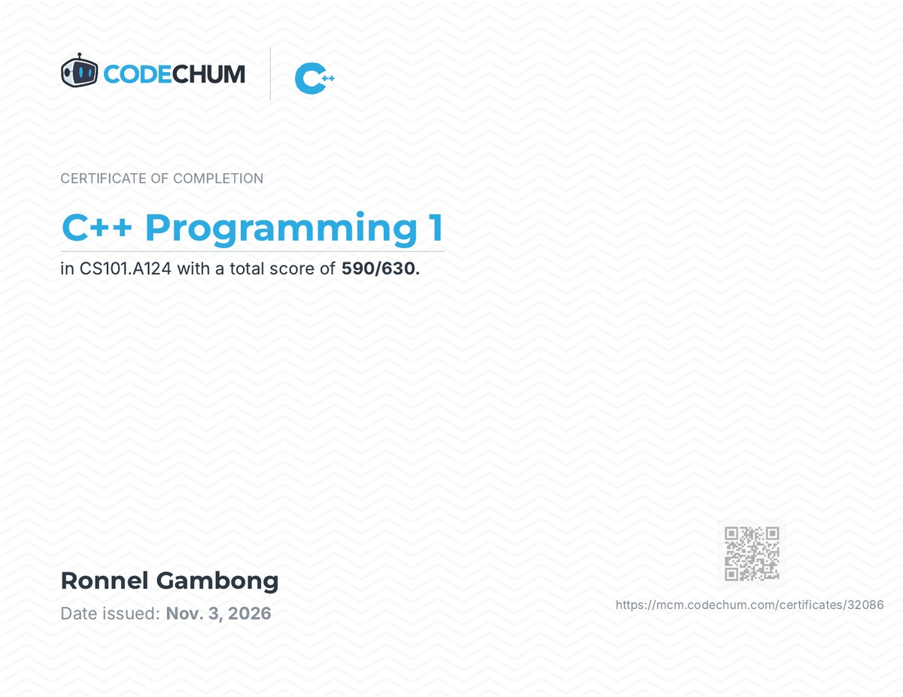

Decimal to binary: 1310
Divide by 2 and keep each remainder.
| Divide | Quotient | Remainder |
|---|---|---|
| 13 ÷ 2 | 6 | 1 |
| 6 ÷ 2 | 3 | 0 |
| 3 ÷ 2 | 1 | 1 |
| 1 ÷ 2 | 0 | 1 |
Read the remainders from the bottom up.
1310 = 11012
CS101L Introduction to Computer Systems, Module 2 Final Project
A 4-bit binary number display
BitLight is a Tinkercad circuit that turns binary numbers into light. Four slide switches are the four bits of a number, worth 8, 4, 2 and 1. Each switch drives one red LED, so the row of LEDs shows the binary pattern and you read it as a decimal or hexadecimal value from 0 to 15.
Try it: flip the switches
8 + 2 + 1 = 11
Many first-year students find binary hard to picture. A string like 1011 looks abstract, and it is easy to forget which position is worth 8, 4, 2 or 1. Most practice happens on paper, so learners never see how one bit turning on or off changes a number.
CS101L students, and teachers who need a simple classroom demo of number systems and basic logic.
A breadboard circuit where each switch completes a path from a 9V battery, through a current-limiting resistor, to its own LED. Switch on means 1 and the LED lights; switch off means 0 and the LED stays dark.
The LEDs match the switches. Switches on, off, on, on light the LEDs worth 8, 2 and 1, which reads as 10112 = 1110 = B16.
Divide by 2 and keep each remainder.
| Divide | Quotient | Remainder |
|---|---|---|
| 13 ÷ 2 | 6 | 1 |
| 6 ÷ 2 | 3 | 0 |
| 3 ÷ 2 | 1 | 1 |
| 1 ÷ 2 | 0 | 1 |
Read the remainders from the bottom up.
1310 = 11012
Multiply each bit by its place value.
| Bit | Place value | Product |
|---|---|---|
| 1 | 23 = 8 | 8 |
| 0 | 22 = 4 | 0 |
| 1 | 21 = 2 | 2 |
| 1 | 20 = 1 | 1 |
8 + 0 + 2 + 1 = 11
10112 = 1110
Split into groups of 4 bits, then convert each group.
| Group | Sum | Hex |
|---|---|---|
| 1101 | 8 + 4 + 0 + 1 = 13 | D |
| 0110 | 0 + 4 + 2 + 0 = 6 | 6 |
Check: D × 16 + 6 = 214, and 128 + 64 + 16 + 4 + 2 = 214.
110101102 = D616
1 carry
0 1 0 1
+ 0 1 1 0
-------
1 0 1 1
10112 = 1110, and 5 + 6 = 11
0 10 1 10 after borrowing
1 1 0 0
− 0 1 0 1
---------
0 1 1 1
01112 = 710, and 12 − 5 = 7

Current reaches an LED only when the power P is on and that switch Si is on. That is an AND gate:
Li = P · Si
While the circuit runs, the battery is connected, so P = 1 and the expression becomes Li = Si. Every LED simply shows its own switch's bit.
| P | Si | Li |
|---|---|---|
| 0 | 0 | 0 |
| 0 | 1 | 0 |
| 1 | 0 | 0 |
| 1 | 1 | 1 |
The highlighted row is the value on BitLight right now. Select any row to show it.
| S3 | S2 | S1 | S0 | L3 | L2 | L1 | L0 | Decimal | Hex |
|---|
BitLight's own logic is a direct Li = Si, so this section is a supporting exercise built on it: an alert output F that turns on when the number on the display is 10 or more. It is the same check a circuit uses to spot a 4-bit value that is not a single decimal digit.
Let A = S3 (8), B = S2 (4), C = S1 (2), D = S0 (1).
F = Σm(10, 11, 12, 13, 14, 15)
F = AB'CD' + AB'CD + ABC'D' + ABC'D + ABCD' + ABCD
The K-Map gives the same answer as the algebra, F = AB + AC, and shows that D is not needed. The cell with the dot is the value on BitLight now.

For each bit, a closed switch completes the circuit through a resistor to its LED. The place values of the lit LEDs are added: 8, 4, 2, 1.
START
SET weight[3]=8, weight[2]=4, weight[1]=2, weight[0]=1
CONNECT 9V battery // power ON
WHILE power is ON
SET value ← 0
FOR i ← 3 DOWN TO 0
READ switch S[i]
IF S[i] is ON THEN
TURN ON LED L[i]
value ← value + weight[i]
ELSE
TURN OFF LED L[i]
END IF
END FOR
DISPLAY LED pattern (binary) and value (decimal)
END WHILE
ENDIF S[i] is ON … ELSE decides whether each LED turns on or off.FOR loop checks the four bits, inside a WHILE loop that repeats while the power is on.The circuit does the LED steps through its wiring. Reading the pattern and adding the place values is the step the user does when interpreting the display. The script behind the BitLight board on this page runs this same algorithm.

It follows the pseudocode line by line.

| Qty | Part | Job |
|---|---|---|
| 1 | 9V battery | Power source |
| 1 | Breadboard | Holds and connects the parts |
| 4 | Slide switches | Bit inputs S3 to S0 |
| 4 | Resistors, 1 kΩ | Limit the LED current |
| 4 | Red LEDs | Bit outputs L3 to L0 |
| – | Jumper wires | Red for power, black for ground |
There is no code: the circuit has no microcontroller, so the logic is done by the wiring.
I = (9 V − 2 V) ÷ R
My resistors are 1 kΩ (colour bands brown, black, red, gold), so I = 7 V ÷ 1000 Ω = 7 mA, safely under a typical LED's 20 mA limit.
For each test I set the switches, ran the Tinkercad simulation and took a screenshot. All four tests passed: every LED pattern matched the expected binary value.
| Test | Switches S3 to S0 | Expected LEDs | Expected value | Actual result | Result |
|---|---|---|---|---|---|
| 1 | 0011 | L1, L0 | 3, hex 3 | L1 and L0 lit, L3 and L2 dark | Pass |
| 2 | 0101 | L2, L0 | 5, hex 5 | L2 and L0 lit, L3 and L1 dark | Pass |
| 3 | 1001 | L3, L0 | 9, hex 9 | L3 and L0 lit, L2 and L1 dark | Pass |
| 4 | 1100 | L3, L2 | 12, hex C | L3 and L2 lit, L1 and L0 dark | Pass |




No corrections were needed after testing: all four test cases passed on the first run, with every LED pattern matching the expected binary value.
For example, switches on, on, off, on light the LEDs worth 8, 4 and 1: 11012 = 1310 = D16.
This project connected all of Module 2. I used number-system conversion to plan what each LED means, binary arithmetic to check results on the display, and logic gates to explain why a switch in series acts like an AND gate. I used Boolean algebra and a K-Map to design an extra alert for values of 10 or more, and pseudocode and a flowchart to describe the circuit's behaviour step by step.
The biggest challenge was that all of this needs time to learn. Number systems, logic gates, K-Maps and wiring a circuit were new to me, and I had to take it step by step. But it was worth it: by the end I could see how the ideas connect and build something that actually works.
The idea that one wire or one light is one bit is used in status-indicator panels, DIP-switch address settings on devices, and the registers inside a CPU. BitLight is a simple teaching tool that helps classmates see binary instead of only memorising it.

Verify the certificate on CodeChum
Writing and debugging C++ programs using variables, input and output, operators, conditional statements and loops. These are the same sequence, selection and iteration structures used in this project's pseudocode.
I, Ronnel P. Gambong, affirm that this work, titled “BitLight: A 4-Bit Binary Number Display,” submitted for CS101L is my own project, completed with the assistance of Claude by Anthropic (claude.ai). I designed, built and tested the BitLight circuit in Tinkercad, and recorded my own test screenshots and demo video. I used Claude to help write the explanations, create the diagrams, and build and polish this website. I reviewed the content against my own circuit and test results, and I take responsibility for its accuracy.